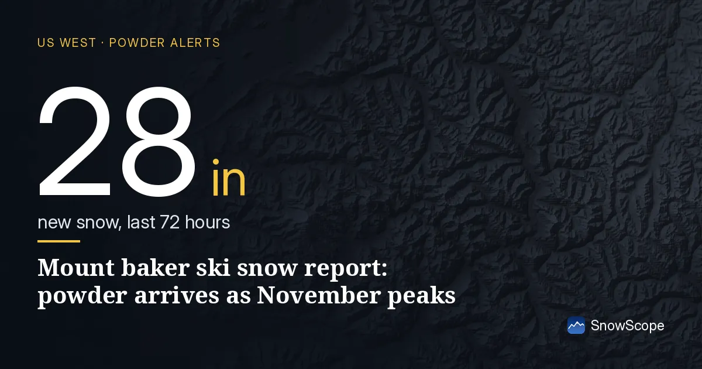
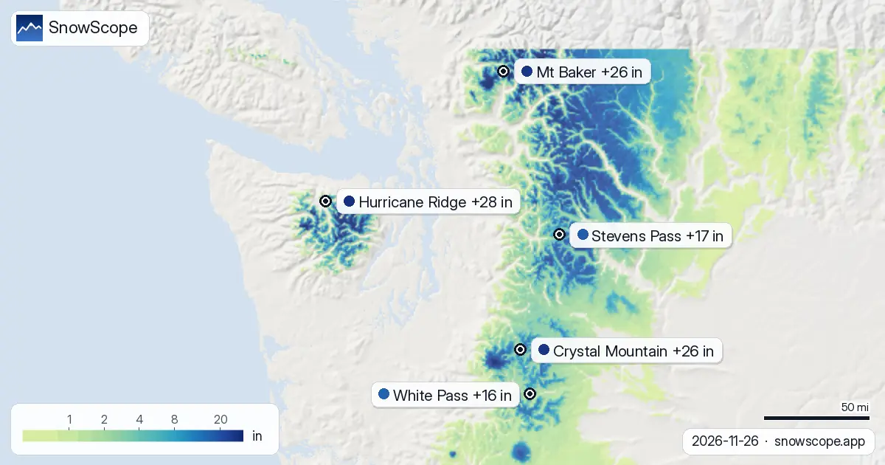

Mount baker ski snow report: powder arrives as November peaks
Mount baker ski snow report – Mt Baker picked up 40 cm (16 in) of snow yesterday, bringing upper-slope depth to 54 cm (21 in). Fresh powder fell across the northern Cascades and continues into Friday, with 21 cm (8 in) more forecast over the next three days.
See the live snow forecast for Mt Baker in the SnowScope appSnow depth, powder alerts and the 3D map, free.
Where the powder landed in 72 hours
Three resorts stand out for the last three days of snowfall. Mt Baker added 65 cm (26 in) total; Crystal Mountain received 66 cm (26 in); Hurricane Ridge accumulated 72 cm (28 in). These are the places where you want to be right now.
Mt Baker's fresh count of 40 cm (16 in) fell in a single day—26 November. That means the snow is new and light. Crystal Mountain also saw a heavy dump on the same day: 56 cm (22 in). The pattern shows a storm pulse moving south and east across the range, hitting the higher peaks hardest.
| Resort | Snow depth | New snow, 72 h | Coming, next days | Top |
|---|---|---|---|---|
| Hurricane Ridge | 27 in (69 cm) | 28 in (72 cm) | 3 in (8 cm) | 5,446 ft (1,660 m) |
| Crystal Mountain | 20 in (51 cm) | 26 in (66 cm) | 8 in (21 cm) | 6,798 ft (2,072 m) |
| Mt Baker | 21 in (54 cm) | 26 in (65 cm) | 8 in (21 cm) | 5,105 ft (1,556 m) |
| Stevens Pass | 19 in (47 cm) | 17 in (44 cm) | 3 in (8 cm) | 5,666 ft (1,727 m) |
| White Pass | 20 in (50 cm) | 16 in (41 cm) | 8 in (20 cm) | 6,519 ft (1,987 m) |

Upper slopes still building
At the top of Mt Baker (1,556 m), SnowScope shows 38 cm (15 in) of snow. Mid-mountain, 20 cm (8 in) sits on the slopes at 1,331 m. The base holds only 10 cm (4 in), which is thin—rocks and grass may show through. Stick to the upper and mid-elevations for safe, skiable snow.
Crystal Mountain's upper slopes are deeper: 48 cm (19 in) at the top (2,072 m). Hurricane Ridge leads the trio with 69 cm (27 in) on its upper slopes at 1,660 m. If you can reach the highest terrain, that is where the powder is thickest.
More snow coming through the weekend
Mt Baker is forecast to pick up 21 cm (8 in) over the next three days. Friday brings the most: 16 cm (6 in). Saturday and Sunday taper to 3 cm (1 in) and 2 cm (1 in). The storm is moving out, so plan your run for Friday.
Crystal Mountain sees a longer-lasting snow push: 21 cm (8 in) forecast, spread across the same three days. White Pass and Hurricane Ridge also expect more snow, though less—around 8 cm (3 in) each. By Monday the region will be mostly dry.
November is peak season for these peaks
Mt Baker sits in a sweet spot right now. The best ski weeks at this resort fall in weeks 14, 10, and 9 of the year—that is early April, early March, and late February. But November powder days like today are rare gifts. The usual depth on this date is 66 cm (26 in); you have 54 cm (21 in), so conditions are close to normal.
Hurricane Ridge, which led the region in fresh snow this week, normally builds its deepest base in weeks 10 and 9 (early March and late February). Today's 69 cm (27 in) is ahead of the typical 39 cm (15 in) for late November. Crystal Mountain is running below normal—it usually has 82 cm (32 in) by now but shows only 51 cm (20 in).
Watch the freeze level Friday
Friday's weather matters for snow quality. At Mt Baker, the freeze level will drop from 1,320 m to 1,150 m between early morning and late afternoon. That means snow will fall wet at mid-mountain and higher slopes will stay cold. Get up early to ski the new powder before afternoon sun and rain turn it heavy.
Saturday is colder: the freeze level crashes to 420 m, so rain may hit base areas and lower mid-mountain slopes. Upper terrain above 1,500 m will stay dry and powdery. By Sunday the freeze level swings wild—up to 1,500 m in the afternoon—which signals unstable air and possible rain on the summit. Stick with Friday morning for the best conditions.
What to do now
If you can ski Friday, go. Mt Baker, Crystal Mountain, and Hurricane Ridge all have fresh snow and more arriving. Avoid the base areas—snow is thin and may turn to rain. Head for mid-to-upper elevations where 38–69 cm (15–27 in) sits underfoot. The forecast is clear: snow tapers after Friday, so this window is short. Check the official avalanche bulletin for the range before venturing off-piste.
Tips for skiers
- Ski Friday morning at Mt Baker, Crystal Mountain, or Hurricane Ridge to catch the new powder before afternoon melt or rain arrives.
- Stay above 1,500 m on Friday afternoon and all day Saturday to avoid wet snow and rain at lower elevations.
- Avoid the base areas at all three resorts; upper and mid-slopes hold 20–69 cm (8–27 in), but bases have only 4–18 cm (2–7 in).
- If you go off-piste, check the official avalanche bulletin for the Cascade Range; fresh snow on steep slopes raises instability risk.
- By Monday the storms will have passed and the region dries. This is a 48–72-hour powder window; plan your trip for the weekend.
About these numbers
Resort snow depths are the deepest snow on the resort's upper slopes on the date shown; they are estimates for an area, not a measurement at one point. Forecasts can change. Always read the official avalanche bulletin before going off-piste.
Official avalanche bulletins: avalanche.org
Cite this report
For research, teaching or the press: the numbers and charts are free to reuse under CC BY 4.0 with this citation.
SnowScope (2026), Mount baker ski snow report: powder arrives as November peaks, https://snowscope.app/blog/en/2026/11/us-west-mt-baker-fresh-snow-powder-alert-26-november-2026.html, accessed 2026-11-26
SnowScope (Atlas Labs). (2026, November 26). Mount baker ski snow report: powder arrives as November peaks. SnowScope snow reports. https://snowscope.app/blog/en/2026/11/us-west-mt-baker-fresh-snow-powder-alert-26-november-2026.html
BibTeX
@misc{snowscope2026uswestmtbakerfreshsnowpo,
author = {{SnowScope (Atlas Labs)}},
title = {Mount baker ski snow report: powder arrives as November peaks},
year = {2026},
month = nov,
howpublished = {\url{https://snowscope.app/blog/en/2026/11/us-west-mt-baker-fresh-snow-powder-alert-26-november-2026.html}},
note = {Published 2026-11-26 14:09 UTC; accessed 2026-11-26}
}· CC BY 4.0 · Methods, data and tools →
Mt Baker: snow and temperature by height, this winter vs last (tools) →
Follow Mt Baker
Free: a message when fresh snow is coming, and the forecast every morning.
More snow reports

Mt. Baker in December: 46 in (116 cm) of snow at mid-mountain on a typical 15 December, and a $98.80 Monday-to-Thursday ticket sold on the day only.

Mt Baker: 8 in (21 cm) at the summit versus less than 1 in (2 cm) at the base. November forecast shows how this height gap will shift.

Mt Baker, Washington: about 133 in (337 cm) at the usual peak at mid-mountain in 46 past winters, a world snowfall record, no lodging on the hill, and what that means.